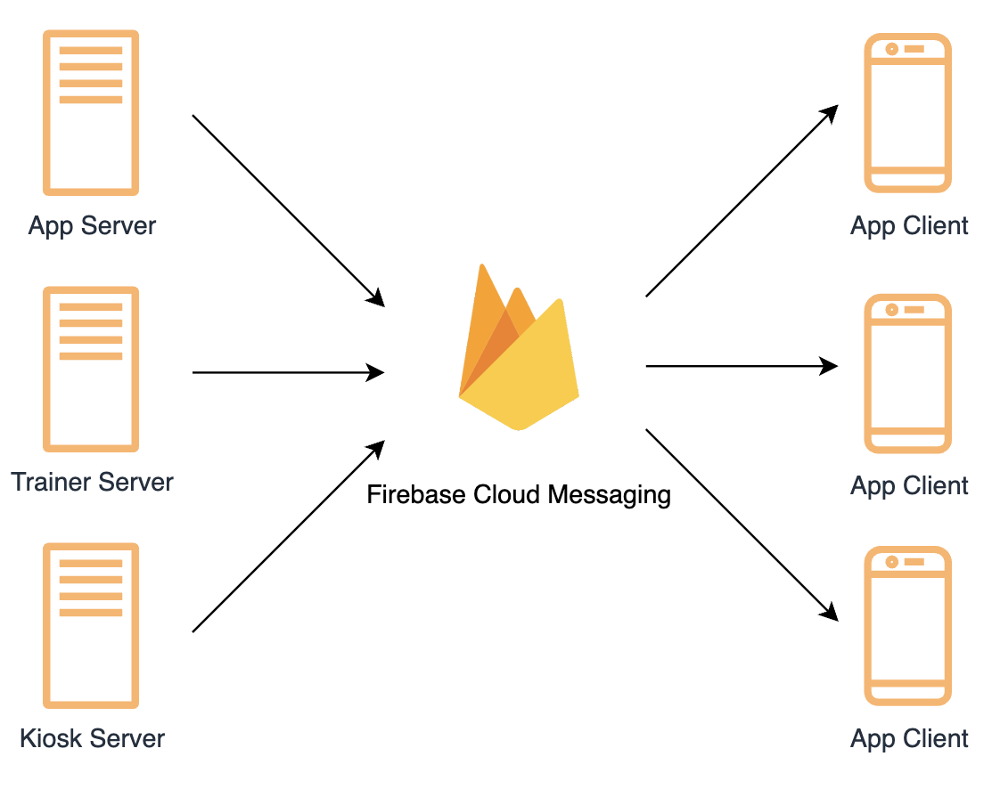
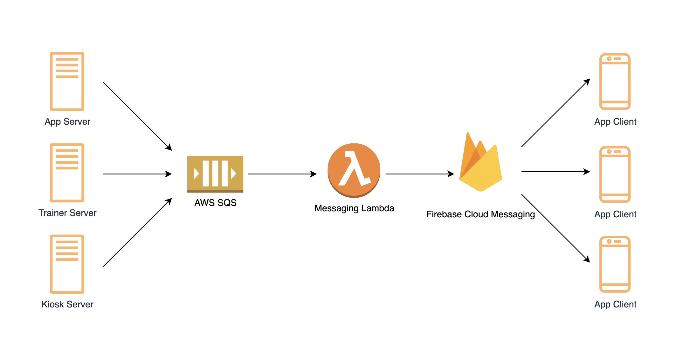
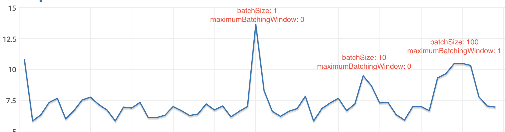

SQS와 Lamdba로 푸시 발송 로직 개선하기
안녕하세요. 서플라이스 Tech팀 백엔드 개발자 김영덕입니다.
최근 운영 중인 제품이 많아지고 각각의 서비스에서 공통으로 필요한 기능이 생기면서 코드 중복을 포함한 몇 가지 문제가 생겼습니다. 특히나 앱 푸시 발송의 경우 거의 모든 서버에서 공통으로 필요한 기능이 되었습니다. 그래서 앱 푸시 기능을 분리하는 작업이 시급했는데요, 최근에 이 부분을 낮은 결합도(Coupling)와 높은 응집도(Cohesion)를 가진 구조로 개선하였습니다.
기존 구조과 문제점
현재 저희는 독립적인 6개의 node 서버가 실행되고 있는데요, 제품 도메인을 기준으로 유저 서버, 키오스크 서버, 트레이너 서버, 출입 서버, 관리자 서버 등으로 구분되어 있습니다. 각각의 node 서버가 도메인을 기준으로 분리되어 있다 보니 동일한 기능을 하는 함수의 중복이 발생하는 문제가 있었습니다. 대표적인 예시가 앱 푸시 발송 입니다. 아래 그림과 같이 기존 구조에서는 각각의 서버에서 FCM을 통해 사용자에게 푸시를 발송하고 있습니다. 
위와 같은 구조에서는 몇 가지 문제가 존재합니다.
- App Server, Trainer Server, Kiosk Server에서 FCM을 초기화하고 앱 푸시를 발송하는 로직이 중복된다.
- 서버에서 직접 FCM에 푸시 발송을 요청하기 때문에 결합도가 높은 문제가 존재한다.
- 푸시 발송 결과를 기다리는 동안 다른 로직이 실행되지 못한다. (응답 속도 이슈도 생길 수 있다.)
- 앱 푸시 실패로 다른 로직이 함께 실패할 수 있거나 앱 푸시 실패를 handling 하는 코드를 각각의 서버에 작성해야 한다.
- 대량 앱 푸시 발송에 적합하지 않다. 대량 앱 푸시 발송의 load가 단일 서버에 집중된다.
새로운 구조
이러한 문제들은 푸시 발송 구조를 변경함으로써 개선 할 수 있었습니다. 아래 그림과 같이 각각의 서버의 푸시 발송 요청은 AWS SQS를 통해 모이고 queue에 message가 들어가면 lambda를 트리거하여 실행하도록 하였습니다. 결과적으로 앱 서버와 푸시 발송의 결합도(Coupling)가 낮아지고 메세징 람다는 독립적인 기능을 수행하기 때문에 높은 응집도(Cohesion)가 있다고 볼 수 있습니다. 뿐만 아니라 lambda의 batch 기능을 통해 queue에 모인 message를 batch 단위로 가져와 작업함으로써 작업 중 발생하는 db 조회의 부하를 낮출 수 있습니다. 
성능 개선 테스트
푸시 발송 구조를 바꿈으로써 많은 양의 코드 중복을 줄이고 load를 분산 시킬 수 있었습니다. 그러나 대량의 푸시가 queue에 쌓이고 이를 람다가 처리할 때 DB의 CPU가 순간적으로 높게 튀는 현상이 발생했는데요, 이는 Lambda의 뛰어난 동시성(concurency) 때문이기도 했습니다. 하나의 푸시 발송 요청이 queue에 들어오면 lamdba는 이 message를 가져가서 푸시 알림을 보내고 디비에 저장하는데요, 이 과정이 짧은 시간 안에 수천 번 동시에 반복되면 DB에 부하가 발생했습니다. 이 문제를 해결하기 위해 람다의 batch size와 batching window를 조절하면서 적정한 값을 찾으려고 했습니다. 참고로 batch size는 람다가 queue에서 동시에 최대 몇 개의 message를 가져오는지에 대한 값이고 batching window는 람다가 message를 가져올 때 최대 몇 초간 기다릴지에 대한 값입니다. 테스트는 t2 micro 사이즈의 테스트 디비에서 실행 하였고 비교 값은 아래와 같이 설정하여 테스트 했습니다.
- batchSize: 1, maximumBatchingWindow: 0
- batchSize: 10, maximumBatchingWindow: 0
- batchSize: 100, maximumBatchingWindow: 1 (batchSize가 넘어가면 0을 초과하는 값으로 maximumBatchingWindow를 설정해야 합니다.) 
테스트는 저희에게 가장 일반적인 상황(동시 푸시 발송수가 수천인 경우)으로 시행하였고 결과를 요약하면 아래와 같습니다.
- batchSize가 1인 경우 눈에 띄게 DB에 부하가 발생했고 10, 100인 경우에는 큰 차이가 없었다.
- maximumBatchingWindow가 0을 초과하는경우 눈에띄게 푸시 알림이 늦게 도착했다.
- 수만 개 이상의 message를 동시처리 하는 경우가 아니라면 maximumBatchingWindow값은 가능하면 0으로 하고 batchSize는 maximumBatchingWindow값을 0으로 할 수 있는 최댓값인 10이 적절해 보였다.
마치며
Tech 팀에서 개발 블로그를 운영하기로 한 여러가지 이유 중 하나는 본인이 해본 것을 제대로 알고 넘어가기 위해서입니다. 저 또한 많은 경우 제대로 동작하면 깊게 알아보지 않고 넘어가는 경우가 많았는데요, 주기적으로 blog에 글을 포스팅하며 해본 것을 제대로 숙지하고자 합니다.
끝으로 서플라이스 개발자 채용을 홍보합니다. 서플라이스는 피트니스 시장에서 빠르게 성장하고 있는 스타트업입니다. 개발자로 이 시장에서 함께 경험을 쌓고 성장하실 분은 언제든 아래 주소로 메일 부탁드립니다.
- dean@suppliesfitness.com
- 채용 공고 보러가기